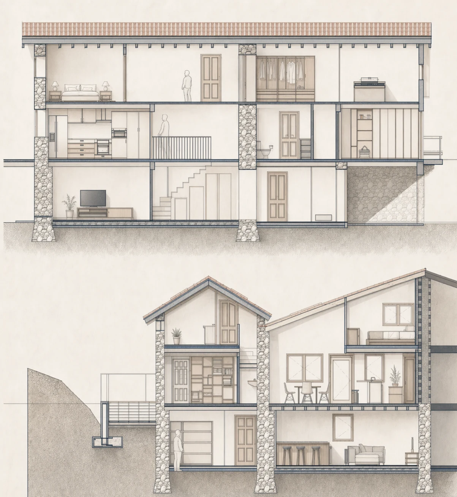
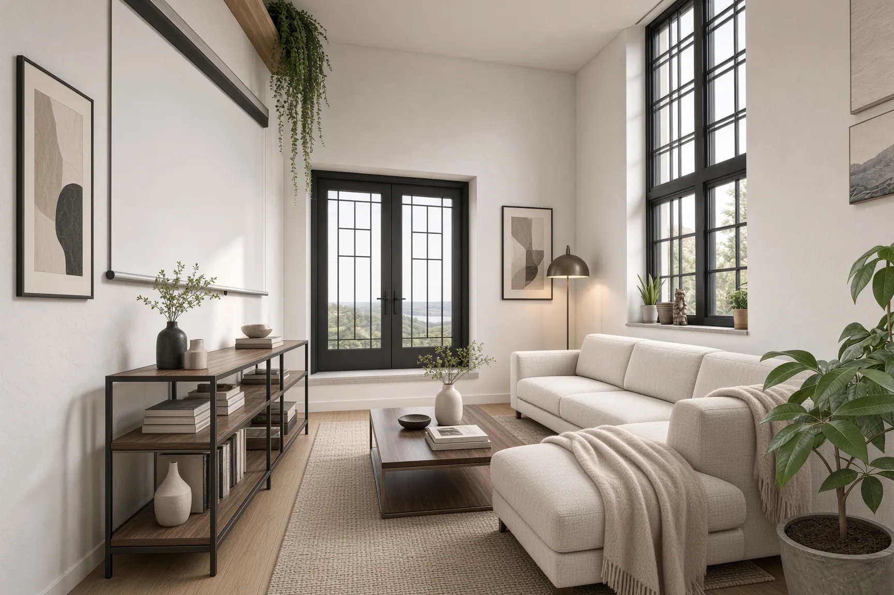
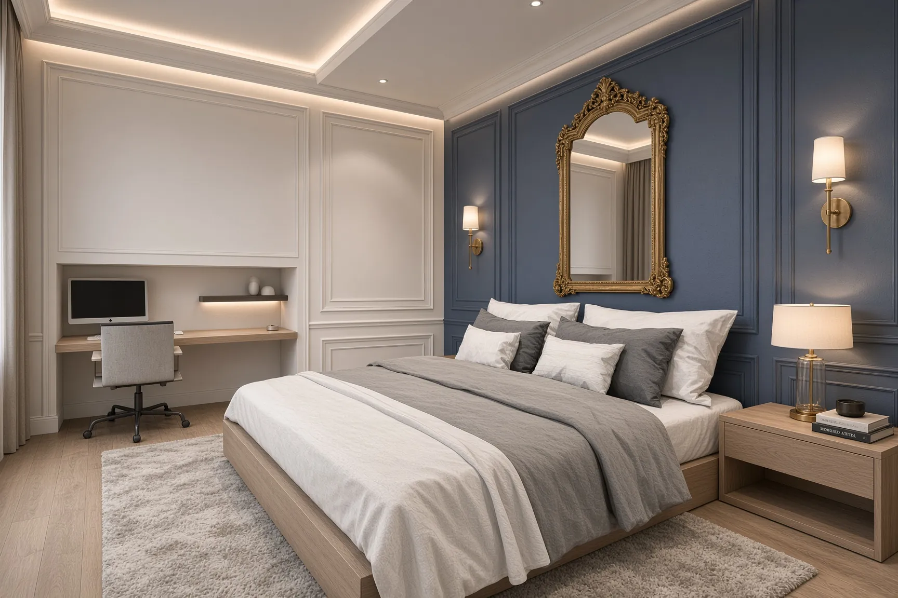
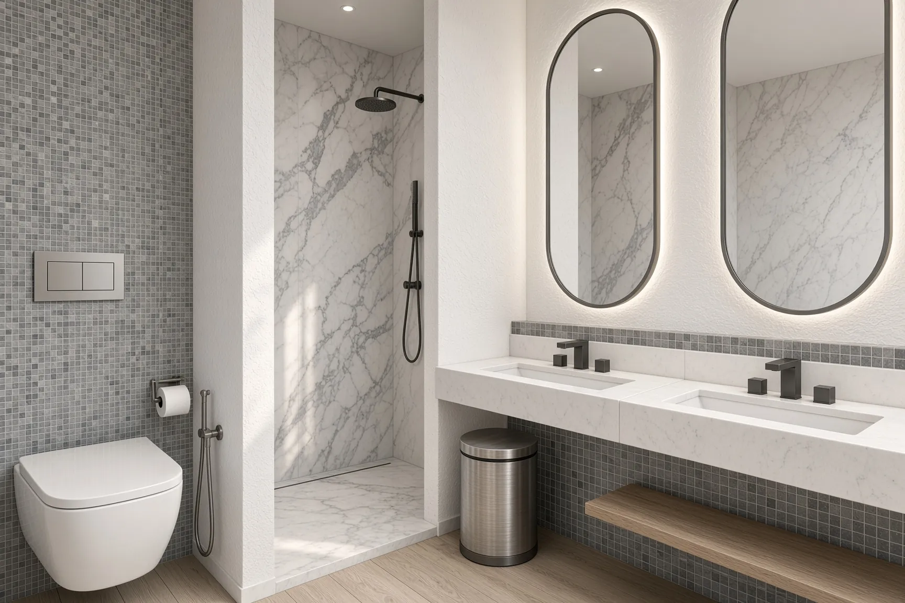
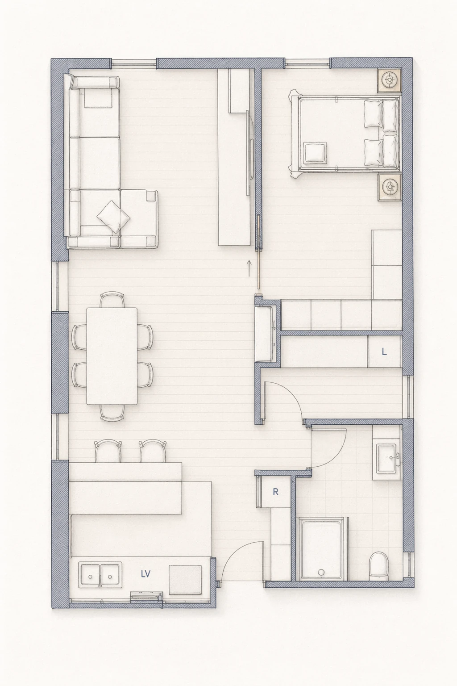

Arquitectura · Práctica independiente
Encargos propios
Reformas de viviendas, cambios de uso y rehabilitación de una borda en Gipuzkoa y Bizkaia.

UbicaciónGipuzkoa y Bizkaia
Año2019 – Actualidad
ProgramaReformas de vivienda, cambios de uso y reforma de borda
RolArquitecto · práctica independiente
Los encargos
Selección de encargos propios en Gipuzkoa y Bizkaia: Sarri Baserria en Larrabetzu; cambios de uso de local a vivienda en Kaletxiki y Ondarreta, Andoain; reformas de pisos en Lezo, Loiola e Irura; y reforma de una borda en Orio.
Una práctica independiente que reúne levantamiento, propuesta, planos, visualización y trato directo con propiedad, gremios y comunidades de vecinos. En los cambios de uso, la viabilidad normativa se estudia antes de desarrollar la propuesta.
Qué hice
- Viabilidad normativa resuelta antes de la propuesta.
- Levantamiento, redistribución y definición de soluciones domésticas.
- Planos, visualización y gestión directa con gremios y comunidad.
AutoCADSketchUpLumionPhotoshop
Ver los recorridos en vídeo 6 vídeos
Sarri Baserria · Larrabetzu
Jardín y rehabilitación

Cambio de uso · Kaletxiki · Andoain
Salón, dormitorio y baño


Reforma de vivienda · Lezo
Estar, comedor y cocina

Reforma de vivienda · Loiola
Propuesta 2


Cambio de uso · Ondarreta · Andoain
De local a vivienda
Rehabilitación de borda · Orio
Propuesta de rehabilitación

Reforma integral · Irura
Distribución de vivienda